oi! prazer, eu sou o
arthur

Arthur Silva Ferraz, 15 anos, da Vila Cruz das Almas, São Paulo. Hiperfoco em música e fascínio pela tecnologia.
conhecer mais meus lugaresoi! prazer, eu sou o
Arthur Silva Ferraz, 15 anos, da Vila Cruz das Almas, São Paulo. Hiperfoco em música e fascínio pela tecnologia.
conhecer mais meus lugaresUm pouquinho sobre mim, onde eu moro e onde estudei.
Nome: Arthur Silva Ferraz
Data de nascimento: 18/05/2011
Idade: 15 anos
Vila Cruz das Almas, na zona norte de São Paulo.
Colégio Orlando Garcia da Silveira.

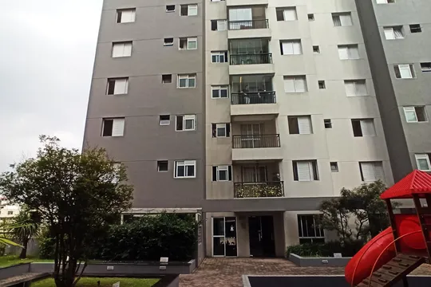
As coisas que eu mais gosto (Ou desgosto):
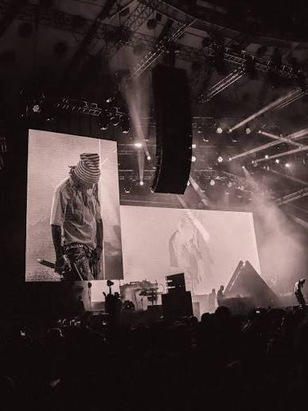
Sou viciado em ouvir música. Já tentei até produzir mas sou pessimo. Um dia quero ir num show de algum dos artistas que gosto.
Eu só não gosto de queijo, e todo mundo me julga por isso.
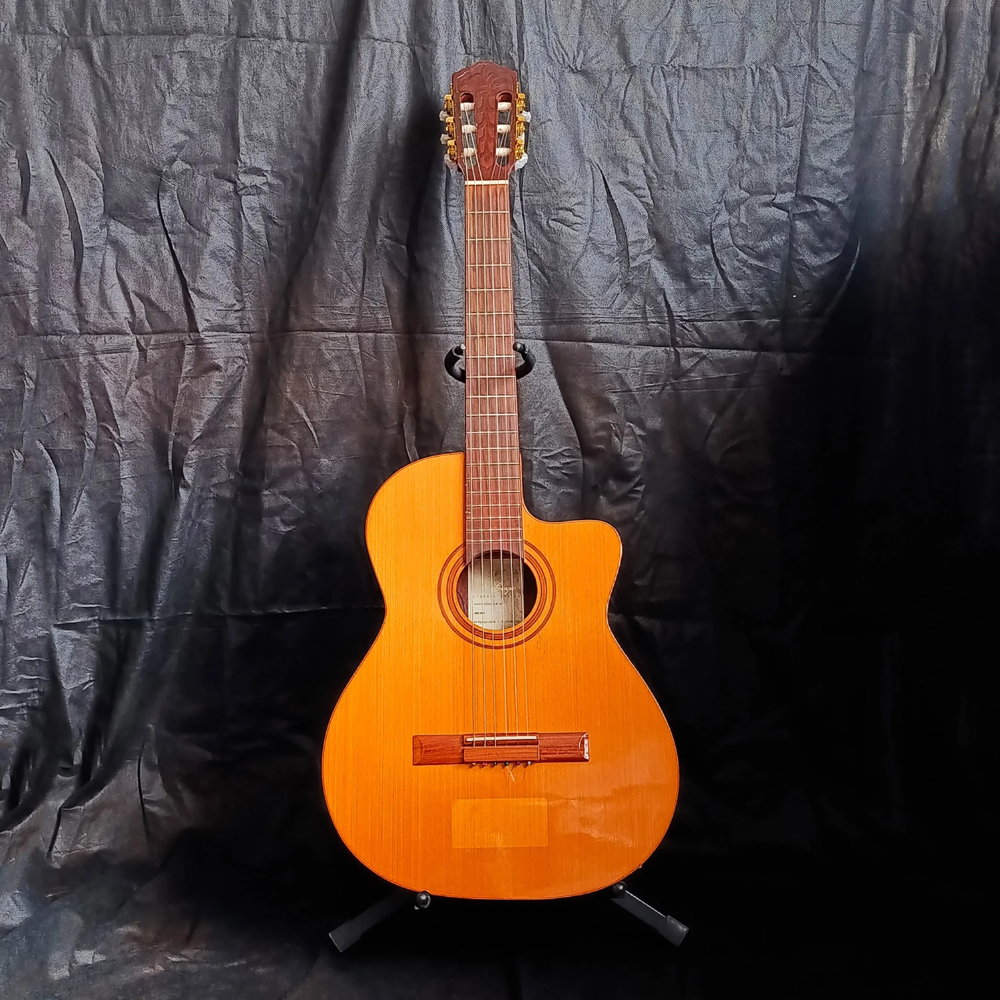
Não sou bom mas sei o basico. Quero voltar a praticar mas não tive tempo no ano.
No futuro, quero fazer faculdade em outro país, para viver outra cultura, ter mais oportunidades de crescer e viver como eu quero.
Me interesso por qualquer coisa que mostre como algo é feito, ou que faça algo novo usando engenharia.
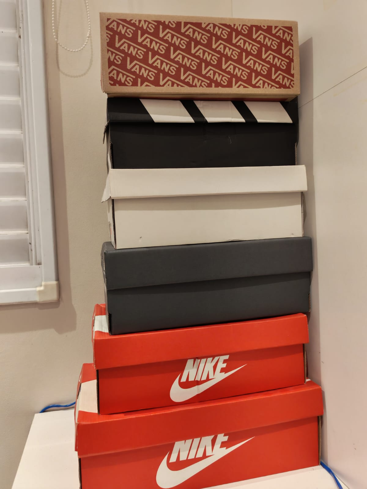
Tenho uma coleção de tênis
Alguns albuns musicais que me impactaram:
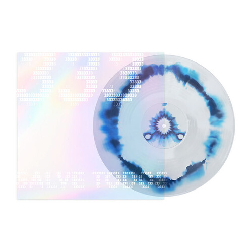
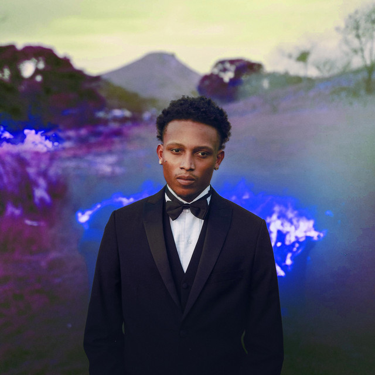

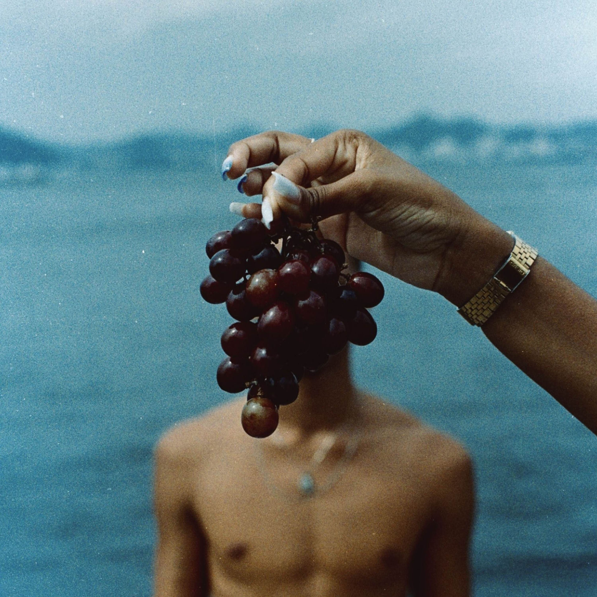
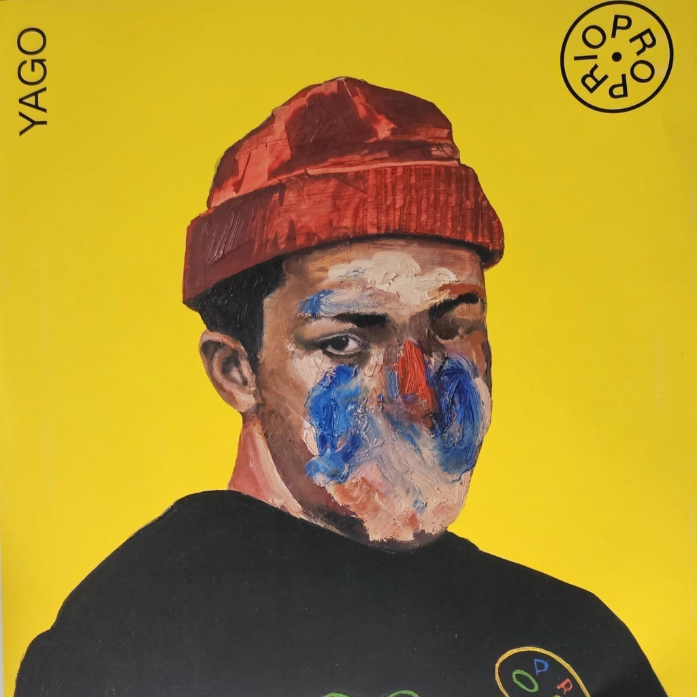
Minha coleção completa:
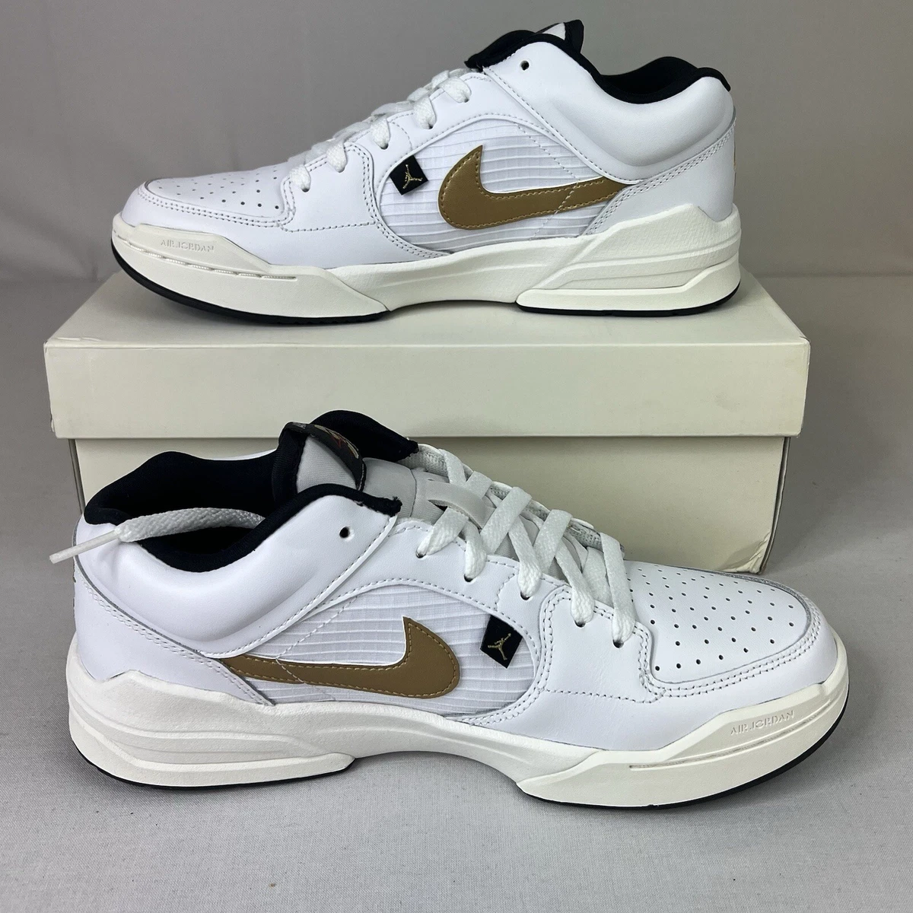
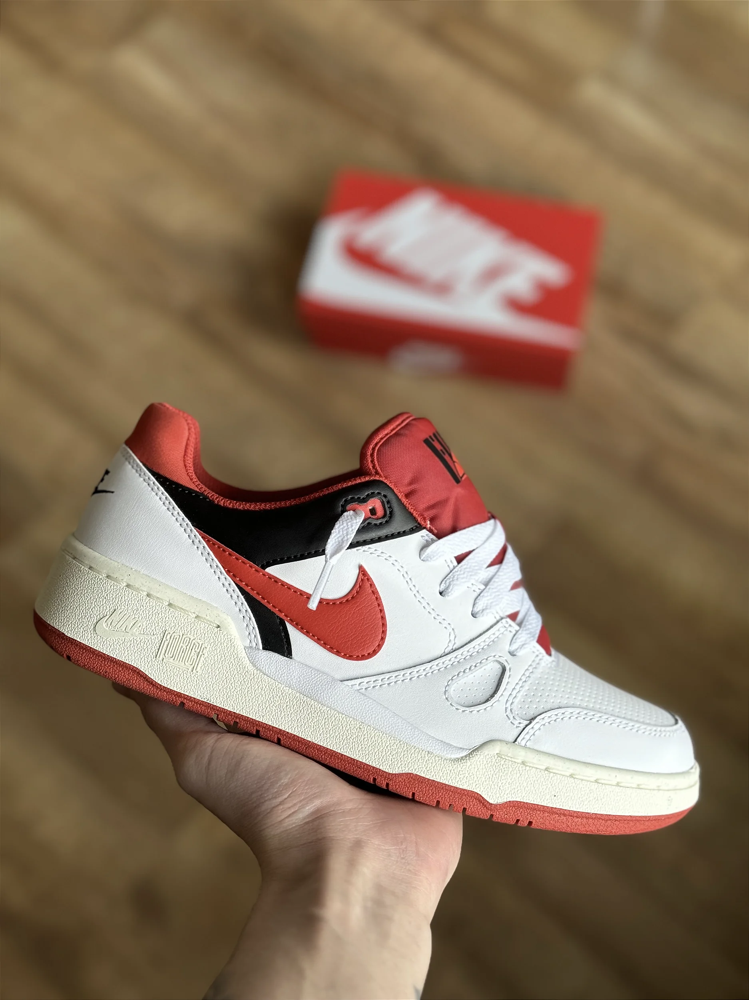

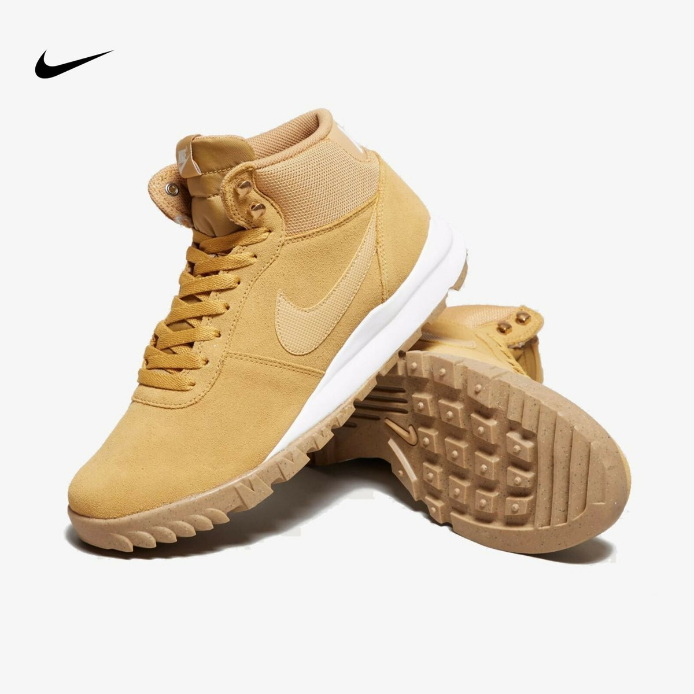
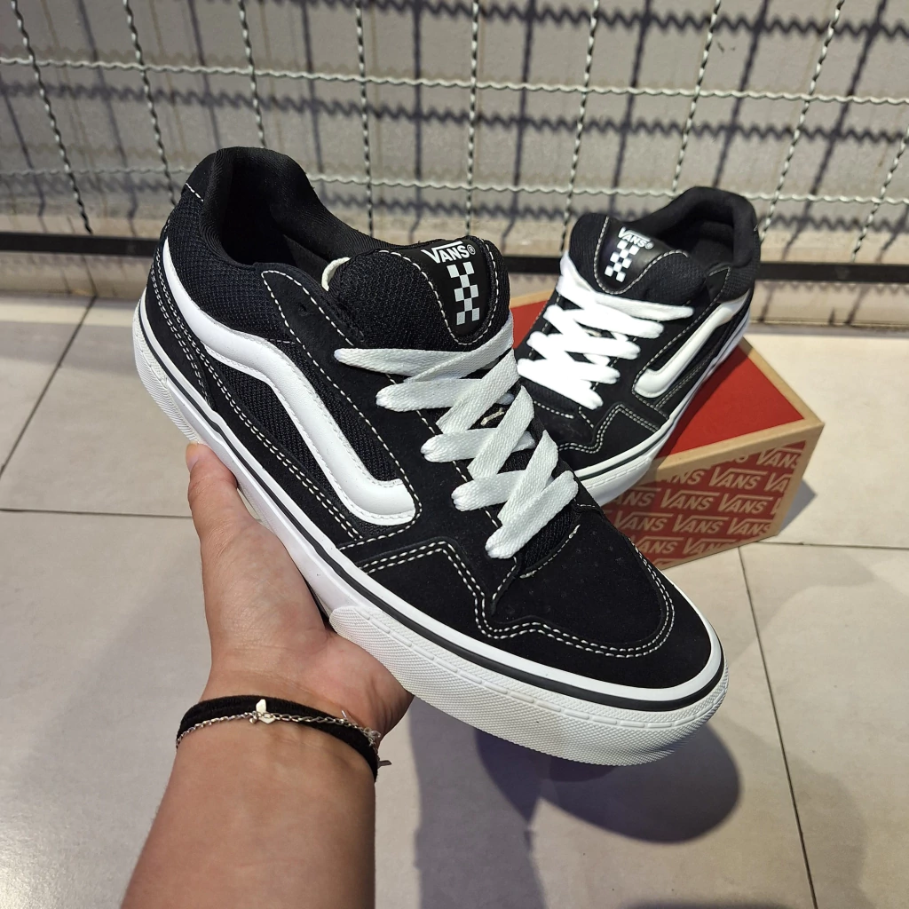

Gosto muito de jogar, os que mais gosto de jogar são:
Clica em cada um pra saber mais.
 01
01FL, Estados Unidos
02RN, Brasil
03IDF, França
 04
04VE, Itália
05RM, Chile
Minha listinha de sonhos.